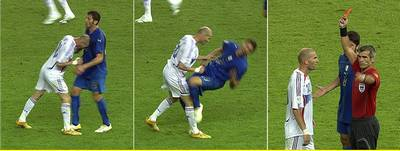

齐达内、足球痞子，没资格申辩！
2006/7/13 16:30:33

一个职业生涯基本都是因为报复性犯规而得了十几张红牌的人，被称为足球痞子绝不为过！一个足球痞子，无论其球技如何，首先还是一个痞子，这样的人，怎么可能被称为球王？而齐达内，恰好就是这样一个职业生涯基本都是因为报复性犯规而得到十几张红牌的足球痞子！
有人可能要说，马拉多那“上帝之手”、吃禁药不也很痞子？但至少马胖子没有职业生涯基本都是因为报复性犯规而得了十几张红牌，至少马胖子没有为了自己的脾气而损害队伍的利益，如果说马胖子无耻，那他的无耻都是对敌人的，而齐达内更像一个内奸！论球技，齐痞连马胖的小脚趾都比不上，一个廖化而已！当然，在世界杯，不仅是马胖，所有人都肯定有一点比不上齐痞：他是世界杯上得红黄牌最多的球员！
不妨冷静分析一下齐痞对当时引起其暴力倾向的情况自述：“马特拉齐防守时拉住了我的球衣，我告诉他让他停下来，我说如果他想要我的球衣可以在赛后进行交换。”请问，这些话不是招骂吗？防守时拉球衣不过是一件最普通的事，齐痞话里充满了讥讽，他为什么不能好好说话？他完全可以就只告诉马特拉齐不要拉球衣，甚至可以向裁判投诉，但这所谓的老将却废话多多地说出这种恶心的话，被骂活该！连唐僧整天说什么“你要XX就给你”之类恶心句式时都被孙悟空暴打，马特拉齐没有暴打其人已经是很顾全大局了，即使真的慰问一下他家里人又有什么了不起的，请问球员、球迷里有谁没这样干过？
问问那个被齐痞脚踏的沙特球员对他有什么观感吧，齐痞就像一只喜欢摆弄羽毛的公鸡，在全世界人面前，在关系国家荣誉的大决赛上演出这么恶心的闹剧，始作俑者就是他自己，就是他那如好斗公鸡般的挑衅语言，你那破球衣谁稀罕呀，回去擦脚去吧，意大利有的是名牌！
而最可恶的还是中国的一些球迷，对这种明显的违规行为还大加鼓噪，还叫嚣什么第三球王，他配吗？还说什么齐痞不下场法国就能赢，按同样的逻辑，也可以说齐痞怕罚点球而故意逃避，一场连中两个点球的几率当然要比只中一个的小，是他自己怕担责任！意大利帅哥拿冠军就这么让对自己外貌没信心的男人很不爽？吃醋去吧！法国98年已经用恶毒的手段偷取了世界杯，这次是来还债的，而且他们也将如他们海峡对面的邻居一样，为他们的无耻用上40年以上的时间来洗刷！
回复
缠中说禅 2006/7/13 20:52:23
总统不是人？是人就可能有痞子或痞子嗜好。
痞子总统：布什
痞子嗜好的总统：喜欢痞子的那些